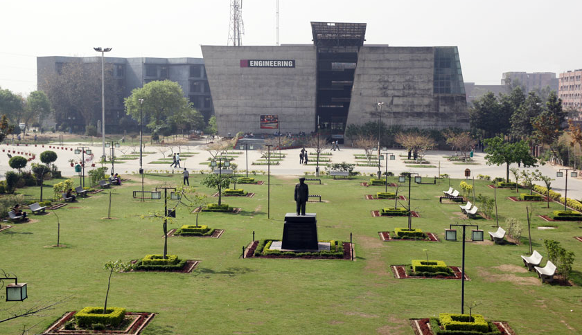
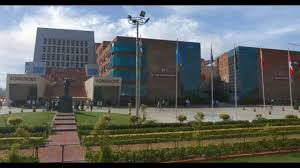

HOME | SERVICE | IMAGE GALLERY | ABOUT US | CONTAC US | PRIVACY POLICY
 LOVELY PROFESSIONAL UNIVERSITY
About:
Lovely Professional University is a semi-residential university college in North India created under the Punjab State Private University Act 2005 and recognized by UGC[5] under Section 2(f) of UGC Act 1956.[6] LPU offers around 200 programmes and courses at diploma, undergraduate, graduate, postgraduate, and doctoral levels. The university has more than 30,000 students graduating every year.[7][8]s.
History [edit]
LPU was founded as Lovely Professional University in 2005 by Mr. Ashok Mittal. The college was affiliated with Punjab Technical University. In 2001 Started with Lovely Institute of Management, In 2002 Lovely Institute of Technology (Engineering and Pharmacy), In 2003 Lovely Institute of Education and Lovely Institute of LAW, In 2004 Lovely Institute of Technology (Architecture, Polytechnic, Higher studies & Vocational Studies), In 2005 BPT, M.Ed., D. Pharm (Ayr, PGDCA, In 2006 under UGC Act became Lovely Professional University and In 2011 Distance Education. In 2016, LPU launched a startup school to give its students a platform to nurture their innovative ideas. It was inaugurated by Finance Minister Arun Jaitley.[9]
Campus Facilities[edit]
LPU's Division of Student Affairs (DSA) provides leisure activities. The Division designs culture, sports, services and other allied social activities and delivers these through different clubs. There is a mall within the campus that houses the in-campus Hotel Unihotel, along with a bowling alley and a state-of-the-art multi-gym at the top floor. There are various kiosks spread across the campus for varied needs.[10]
Awards & Achievements[edit]
The Lovely Faculty of Technology and Sciences was ranked #12 on the CSR-GHRDC Engineering Colleges Survey 2011.[11] LMA Vardhman award was given to Ashok Mittal, Chancellor of Lovely Professional University (LPU). The university got the best private university of the year award by ASSOCHAM for the year 2012.[12] TV Channel Star News (Now ABP News) conferred National 'Outstanding B-School – North' Award and B-School Leadership – National' Award to LPU in 2011.[13] LPU bagged the World Education Award 2016 at the 7th World Education Summit held in New Delhi. The award has been given to acknowledge LPU’s efforts in developing human resource to bring innovation in open and distance learning.[14] In 2016, Assocham declared LPU as the Best University for innovation and entrepreneurship in India.[15] Six LPU students have been honoured at Dada Saheb Phalke Film Festival-2016 for their ad-film ‘DoCoMo-Do the New’. [16] LPU’s MBA student defeats IIM students to win in ICICI Stock Mind Event. [17]
copyright © 2017 All right reserved: Lpu.in
>